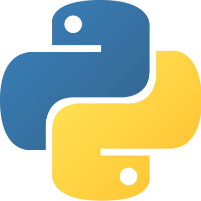
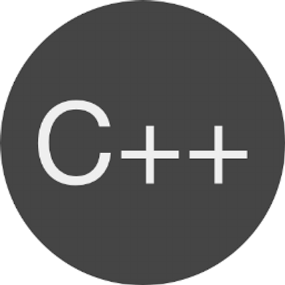

Adrian Osuna
Recent College graduate from California State University San Bernardino with a B.S. in Computer Science and a Minor in Mathematics. I have approximatley two years of programming experience in Python, PostgreSQL, C++. I have recently started programming in JavaScript. I am very egar to find employment to further expand my skills as a programmer. I have tried to help automate task at my current employer and help them as much as possible by incorporating the different programming techniques I have learned through experience and university. Below are a few projects that I have worked on.
Projects Worked on


Fast Eviction Service Project
